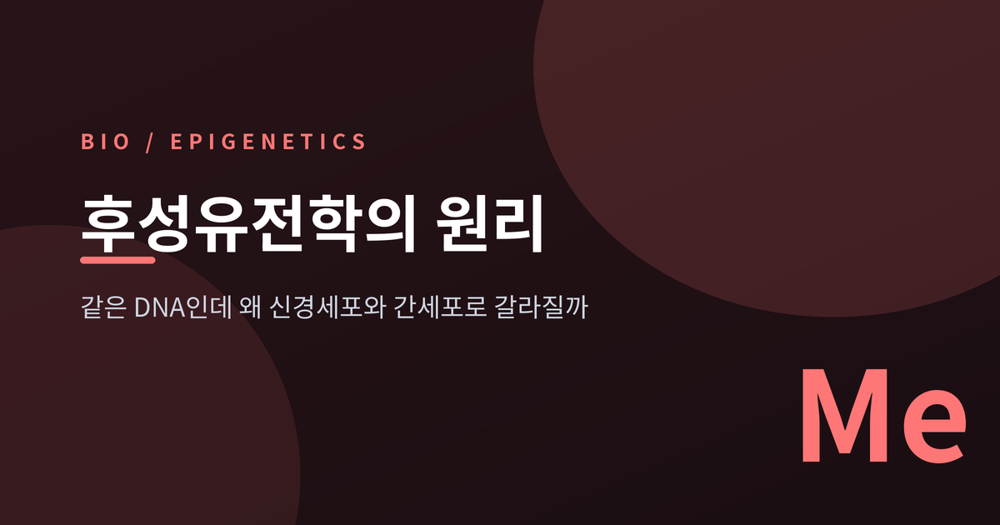
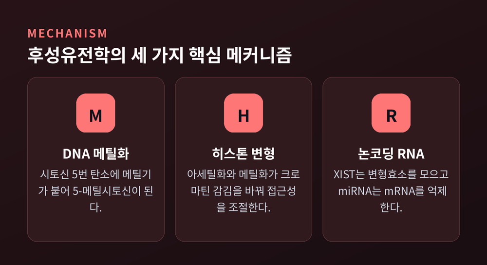
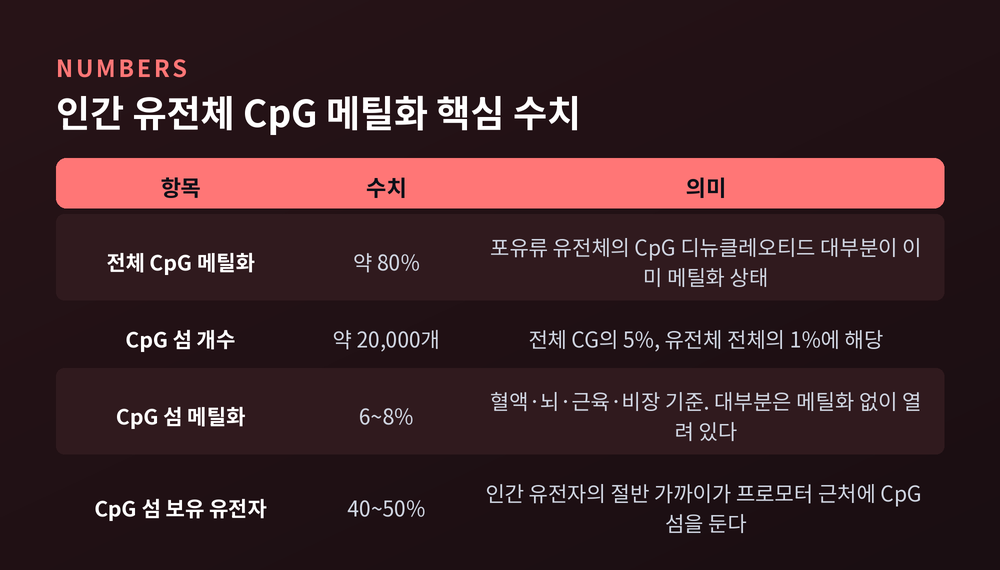
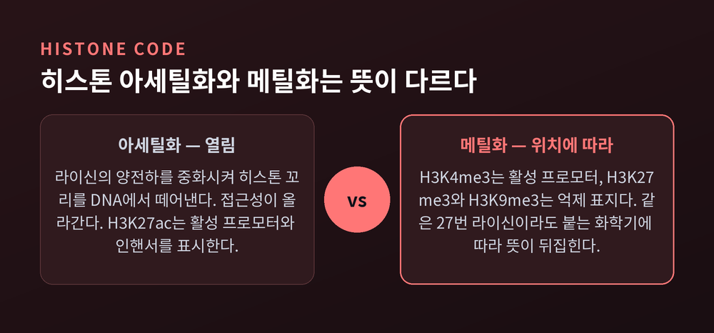
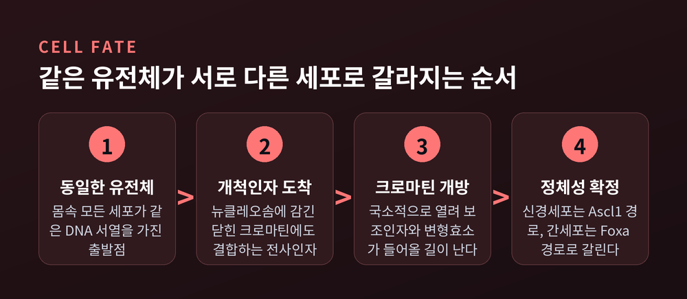
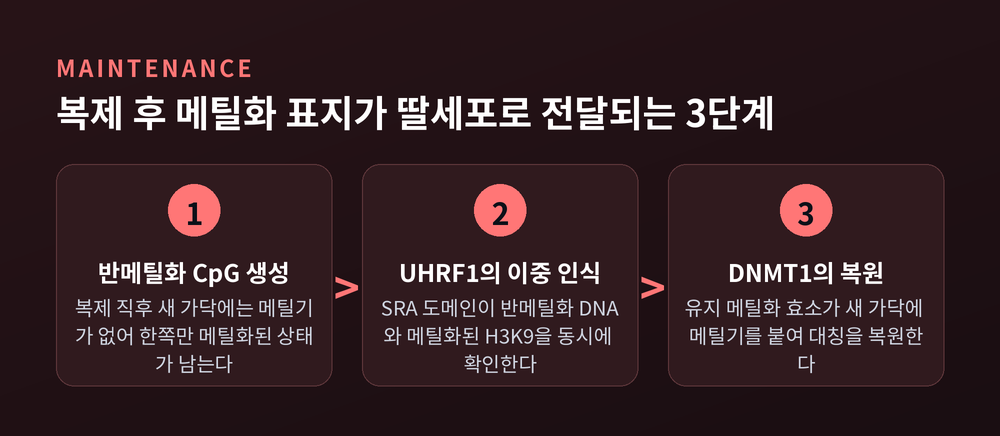
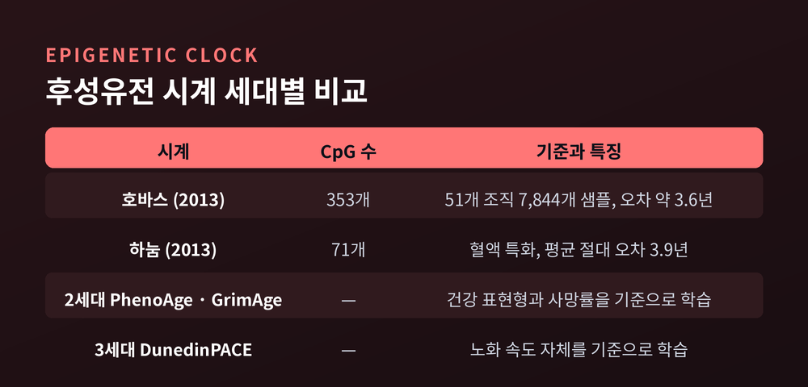

이번 글에서는 후성유전학의 원리를 정리해 보겠습니다. DNA 염기서열은 한 글자도 바뀌지 않았는데 유전자 발현만 달라지는 현상, 그 실제 분자 장치를 하나씩 따라가 보려 합니다. 세포 분화부터 노화 측정, 항암제까지 이어지는 이야기입니다.

정의부터 짚겠습니다.
후성유전학적 형질은 "DNA 염기서열의 변화 없이, 염색체의 변화로부터 비롯되는 안정적으로 유전되는 표현형"을 말합니다. 2008년 콜드스프링하버 회의에서 합의된 조작적 정의입니다.
여기서 두 단어가 중요합니다. 염기서열 변화 없이, 그리고 안정적으로 유전되는.
돌연변이는 유전 정보 자체를 바꿉니다. 후성유전 표지는 정보를 그대로 둔 채 그 정보의 가독성(readability)만 바꿉니다. 악보는 그대로인데 어느 마디를 연주할지가 달라지는 셈입니다.
메커니즘은 크게 셋입니다. DNA 메틸화, 히스톤 변형, 그리고 논코딩 RNA. 미국 국립보건원(NIH) MedlinePlus는 이 셋을 "유전 암호를 영구히 바꾸지 않고도 세포가 환경과 발생 과정에 반응하게 하는 제어 시스템"으로 설명합니다.
가장 오래 연구된 표지입니다.
DNA 메틸화는 시토신(C)의 5번 탄소에 메틸기를 붙여 5-메틸시토신을 만드는 반응입니다. 메틸기 공여체는 SAM이고, 이 반응을 담당하는 효소가 DNMT 계열입니다.
붙는 자리는 아무 데나가 아닙니다. 진핵생물에서는 구아닌(G)이 뒤따르는 시토신, 즉 CpG 디뉴클레오티드에서만 일어납니다.
수치를 보면 그림이 선명해집니다.
포유류 유전체에서 CpG 디뉴클레오티드의 약 80%가 이미 메틸화되어 있습니다. 그런데 CpG가 유난히 빽빽하게 몰린 구간이 따로 있습니다. 이것을 CpG 섬(CpG island)이라 부릅니다. 인간 유전체에 약 20,000개, 전체 CG의 5%, 유전체 전체의 1%에 해당합니다.
역설적인 것은 이 CpG 섬만은 대체로 메틸화되어 있지 않다는 점입니다. 인간 혈액·뇌·근육·비장에서 CpG 섬의 6~8%만 메틸화되어 있습니다.
CpG 섬은 인간 유전자의 40~50%에서 프로모터 근처에 놓여 있습니다. 유전자의 스위치 자리를 일부러 비워둔 것입니다. 그리고 이 자리가 메틸화되면 유전자는 꺼집니다.
정상 세포에서 CpG 섬 프로모터가 과메틸화되는 일은 드뭅니다. 그런 일이 벌어지면 대개 종양 발생이나 비정상 발생의 맥락입니다.

DNMT도 역할이 나뉩니다. DNMT3A와 DNMT3B는 유전체 전반과 반복서열을 중복적으로 메틸화하지만, CpG 섬 메틸화에서는 DNMT3B의 역할이 두드러집니다.
DNA만으로는 설명이 끝나지 않습니다.
인간 세포의 DNA는 히스톤 단백질에 감겨 있습니다. 감긴 정도가 곧 접근성입니다. 감겨 있으면 전사인자도 RNA 중합효소도 들어가지 못합니다.
히스톤 꼬리에 붙는 화학기가 이 감김을 조절합니다.
아세틸화의 원리는 물리적으로 단순합니다. 라이신 잔기의 양전하를 중화시켜, 음전하를 띤 DNA와 히스톤 꼬리의 결합을 느슨하게 만듭니다. 꼬리가 뉴클레오솜 DNA에서 떨어지고 접근성이 올라갑니다.
메틸화는 다릅니다. 아세틸화가 대체로 "열림"이라면, 메틸화는 붙는 위치에 따라 정반대의 뜻이 됩니다.
| 표지 | 위치 | 의미 |
|---|---|---|
| H3K27ac | 히스톤3 27번 라이신 아세틸화 | 활성 프로모터·인핸서 표시 |
| H3K4me3 | 히스톤3 4번 라이신 3중 메틸화 | 활성 프로모터 |
| H3K27me3 | 히스톤3 27번 라이신 3중 메틸화 | PRC2가 만드는 억제 표지 |
| H3K9me3 | 히스톤3 9번 라이신 3중 메틸화 | 이질염색질, 강한 억제 |
같은 27번 라이신인데 아세틸기가 붙으면 활성, 메틸기가 붙으면 억제입니다.

이 표지들은 서로 독립적이지 않습니다. 한 변형이 다른 변형의 부착·제거·인식에 영향을 주는 크로스토크가 일어납니다. 그래서 조합 자체가 의미를 갖는다는 뜻에서 "히스톤 코드"라 부릅니다. 실제로 H3K18과 H3K23의 아세틸화가 MLL 매개 H3K4 메틸화의 확립을 지시한다는 연구가 있습니다.
이제 처음의 질문으로 돌아가겠습니다.
몸속 어느 세포를 뽑아도 유전체는 같습니다. 그런데 신경세포는 시냅스 단백질을 만들고 간세포는 알부민을 만듭니다. 갈림길은 어디에 있을까요.
핵심은 개척인자(pioneer transcription factor)입니다.
보통의 전사인자는 이미 열려 있는 DNA에만 붙습니다. 개척인자는 다릅니다. 뉴클레오솜에 감겨 닫혀 있는 상태의 표적 서열에도 결합합니다. 그리고 국소적으로 크로마틴을 열어, 다른 전사인자와 변형효소가 들어올 길을 냅니다.
구체적인 두 사례가 있습니다.
신경세포 방향에서는 Ascl1이 침묵 상태의 크로마틴에 먼저 결합합니다. 그 뒤에 Brn2가 붙어 성숙 후기를 담당합니다.
간세포 방향에서는 Foxa가 닫힌 크로마틴에 결합해 길을 열고, Hnf4a 같은 보조인자가 간세포 특이적 유전자 발현을 구동합니다.
어떤 개척인자가 먼저 도착하느냐에 따라 열리는 조절 요소의 집합이 달라집니다. 그 결과가 세포 정체성입니다.

미분화 세포에는 흥미로운 준비 상태가 있습니다. 양가(bivalent) 크로마틴입니다. 활성 표지 H3K4me3와 억제 표지 H3K27me3를 한 자리에 동시에 지닌 상태입니다. 분화 신호가 오면 이 요소는 활성이나 억제 중 한쪽으로 해소됩니다.
여러 운명을 동시에 "대기 상태"로 걸어두었다가 하나를 확정하는 방식입니다.
후성유전 표지가 얼마나 정밀할 수 있는지 보여주는 두 사례입니다.
유전체 각인(genomic imprinting)은 부모 중 어느 쪽에서 왔느냐에 따라 한쪽 대립유전자만 발현되는 현상입니다. 표지는 배우자 형성기와 초기 배아 발생 중에 확립되고, 이후 평생 모든 체세포에서 유지됩니다. 조절 주체는 각인조절영역(ICR)의 차등 메틸화입니다.
인간에서 확인된 각인 유전자는 약 100여 개 수준입니다. 다만 집계 기준에 따라 100개에서 150개까지 보고되므로 확정된 숫자로 받아들이기는 어렵습니다.
임상적 귀결이 극적입니다. 프래더-윌리 증후군과 앤젤만 증후군은 임상 양상이 전혀 다른 두 질환인데, 둘 다 15번 염색체 15q11-q13 영역에서 비롯됩니다. 차이는 결손된 유전자가 부계에서 왔는지 모계에서 왔는지, 그것뿐입니다. 부계 결손이면 프래더-윌리, 모계 결손이면 앤젤만입니다.
X염색체 불활성화(XCI)는 논코딩 RNA의 대표 무대입니다.
XX인 사람은 X염색체가 둘, XY인 사람은 하나입니다. 발현량을 맞추려면 하나를 꺼야 합니다. 이 일을 XIST라는 긴 논코딩 RNA가 맡습니다.
XIST는 두 X염색체 중 하나에서 무작위로 켜지고, 이후 불활성 X에서만 배타적으로 발현됩니다. 그리고 RNA 결합 단백질들과 함께 전사 억제자와 크로마틴 변형효소를 불러들입니다.
순서가 인상적입니다. 먼저 H3K27me3, H2AK119-Ub, H3K9me3 같은 억제성 히스톤 변형이 쌓입니다. 그 다음에 CpG 섬과 프로모터의 DNA 메틸화가 풍부해집니다.
히스톤이 먼저 덮고, DNA 메틸화가 나중에 잠급니다. 후성유전 층위에 위계가 있다는 뜻입니다.
한 가지 주의할 점을 덧붙이겠습니다. 마우스에서는 Tsix가 태반 조직의 각인 조절에 매우 중요하지만, 인간 TSIX는 유전체 각인 조절에 관여하지 않는 것으로 보고되었습니다. 동물 결과를 인간에 그대로 옮기면 안 되는 이유입니다.
논코딩 RNA는 XIST만이 아닙니다. 약 22개 뉴클레오티드 길이의 miRNA는 표적 mRNA를 분해하거나 번역을 억제하고, piRNA는 생식세포에서 트랜스포존 활성을 억제합니다.
여기서 근본적인 문제가 하나 생깁니다.
DNA가 복제되면 새로 만들어진 가닥에는 메틸기가 없습니다. 그러면 한쪽 가닥만 메틸화된 반메틸화 CpG가 생깁니다. 이 상태를 방치하면 분열 한 번에 후성유전 정보가 절반씩 희석됩니다.
해결책은 이 반메틸화 상태 자체를 주형으로 쓰는 것입니다.
UHRF1이 그 역할을 합니다. UHRF1의 SRA 도메인은 반메틸화 DNA를 인식해 결합하고, 유지 메틸화 효소인 DNMT1을 복제 부위로 데려옵니다. 실제로 두 단백질은 S기 동안 핵 안에서 함께 움직이며 활성 복제 부위에 몰려 있습니다.
UHRF1은 반메틸화 DNA와 메틸화된 히스톤 H3K9을 동시에 인식합니다. 이 이중 확인이 DNMT1을 정확한 자리로 보냅니다.

다만 이 시스템도 완전하지는 않습니다. DNMT1은 자가억제 성질을 가진 효소여서, 단독으로는 체세포 분열을 거치며 전역적 메틸화를 유지하지 못합니다. PCNA 결합 부위가 있지만 그것만으로도 부족합니다. 여러 조절 인자가 겹겹이 필요합니다.
환경이 후성유전체에 흔적을 남긴다는 이야기에서 가장 자주 인용되는 연구입니다.
1944년 11월부터 1945년 5월까지, 네덜란드 서부에서 기근이 있었습니다. 점령기 내내 1,800kcal 수준을 유지하던 배급이 1944년 11월 1,000kcal 아래로 떨어졌고, 1945년 4월에는 하루 500kcal까지 내려갔습니다. 암스테르담에서는 1945년 2월에 580kcal였습니다. 약 2만 명이 사망했습니다.
이 시기 태아였던 사람들을 추적한 연구가 있습니다.
2008년 PNAS 논문의 결과는 이렇습니다. 임신 극초기(주산기)에 기근에 노출된 사람들은 60년 뒤에도 노출되지 않은 동성 형제자매에 비해 각인 유전자 IGF2의 메틸화가 낮았습니다. 형제자매를 대조군으로 삼았다는 점이 이 연구의 강점입니다.
여기까지가 널리 알려진 이야기입니다. 그런데 그 다음이 중요합니다.
2012년 PLOS ONE 후속 연구는 IGF2/H19 영역의 다섯 개 DMR을 정밀하게 들여다봤습니다. 모든 IGF2 DMR에서 작지만 일관된 차이가 확인되었습니다. H19 DMR에서는 확인되지 않았습니다.
그리고 세 가지 한계가 함께 보고되었습니다.
첫째, 효과 크기가 작습니다. 절대적 메틸화 변화량이 크지 않습니다.
둘째, 기능적 연결이 아직 불확실합니다. 예비 분석에서 이 메틸화 차이와 혈장 지질·BMI 사이의 유의한 연관은 확인되지 않았습니다. 이 지표들은 앞선 연구에서 태아기 기근 노출과 관련 있다고 보고됐던 것들입니다.
셋째, 환경만의 효과가 아닙니다. 태아기 기근과 유전적 변이가 각각 독립적이고 가산적으로 메틸화와 연관되어 있었습니다.
한 걸음 더 나아간 주장, 즉 세대 간 후성유전 유전은 더 조심해야 합니다.
동물 연구에서는 설득력 있는 증거가 나왔습니다. 그러나 인간에서는 여전히 논쟁 중입니다. 이유는 세 가지입니다. 증거가 불충분하다고 여겨지고, 체세포에서 생식세포로의 정보 전달을 함의하는데 이는 확립된 생물학 원칙과 충돌하며, 무엇보다 생식세포 분화와 수정 후 발생 과정에서 크로마틴이 광범위하게 재편되기 때문입니다. 여기에 유전적·생태적·문화적 유전이 교란 요인으로 겹칩니다.
"부모의 경험이 자식에게 유전된다"는 문장은, 적어도 인간에 대해서는 아직 확립된 사실이 아닙니다.
2013년 스티브 호바스가 발표한 시계는 후성유전학의 응용 가능성을 바꿔놓았습니다.
원리는 단순합니다. 나이에 따라 메틸화 수준이 예측 가능하게 변하는 CpG 자리를 모아 회귀 모델을 만드는 것입니다.
호바스 시계는 353개 CpG 부위를 씁니다. 이 중 193개는 나이와 양의 상관, 160개는 음의 상관입니다. 51개 조직·세포 유형의 7,844개 샘플로 개발되었습니다.
정확도는 오차 약 3.6년, 실제 나이와의 상관 r은 0.96~0.97 수준입니다. 발표 당시 어떤 바이오마커도 도달하지 못한 수준이었습니다.

다만 한계도 뚜렷합니다.
범조직 시계라고는 하지만 조직마다 정확도가 다릅니다. 호르몬에 민감한 조직이나 혈액처럼 변동이 큰 샘플에서 특히 그렇습니다. 60세 이상에서는 생물학적 나이를 과소평가하는 경향이 보고되었습니다. 훈련 데이터에 고령 샘플이 적었던 탓으로 추정합니다.
예전에는 실제 나이를 얼마나 정확히 맞히느냐가 기준이었습니다. 지금은 다릅니다. 2세대 PhenoAge와 GrimAge는 건강 표현형과 사망률을 기준으로, 3세대 DunedinPACE는 노화 속도 자체를 기준으로 학습되었습니다.
미국 국립노화연구소(NIA)가 소개한 연구에 따르면, 이 시계들로 계산한 노화 가속은 인지기능 저하, 기능 제한, 만성질환, 4년 사망률을 유의하게 예측했습니다. 14개 시계를 174개 질병 결과에 대해 비교한 2025년 연구에서도 2·3세대가 1세대를 실질적으로 능가했습니다.
그렇다고 아무 시계나 써도 되는 것은 아닙니다. 시계마다 결과가 다르고, 그 차이는 임상적으로 유의할 만큼 큽니다.
후성유전 표지가 돌연변이와 결정적으로 다른 점이 있습니다. 되돌릴 수 있다는 것입니다. 그래서 약물 표적이 됩니다.
가장 먼저 임상에 진입한 것은 DNMT 억제제입니다. 아자시티딘이 2004년, 데시타빈이 2006년 FDA 승인을 받았습니다. 둘 다 뉴클레오시드 유사체로, 복제 중 DNA에 끼어 들어가 DNMT에 비가역적으로 결합해 메틸화를 막습니다. 적응증은 골수형성이상증후군(MDS)과 급성골수성백혈병(AML)입니다.
HDAC 억제제도 뒤를 이었습니다. 보리노스타트(SAHA)가 2006년 피부 T세포 림프종으로 최초 승인되었고, 로미뎁신이 2009년 11월에, 파노비노스타트가 재발성 다발골수종으로 승인되었습니다. 벨리노스타트도 목록에 있습니다.
히스톤 메틸전이효소 쪽에서는 EZH2 억제제 타제메토스타트가 상피양육종으로 승인되었습니다.
여기까지 보면 순조로워 보입니다. 그러나 현실은 더 냉정합니다.
HDAC 억제제 단독요법은 고형암에서 효능이 제한적이었습니다. 고형종양 안에서 유효 농도에 도달하지 못하고, 심장 독성이 임상 진전을 가로막습니다. 범(pan)-HDAC 억제제는 고등급 독성 때문에 개발 자체가 제약을 받았습니다.
그래서 최근에는 단독보다 병용 전략이 중심입니다. 항 PD-1 억제제나 독소루비신과 함께 쓰는 방식입니다. 다만 도세탁셀처럼 오히려 독성을 키우는 조합도 있습니다.
승인 목록은 늘었지만, 대상은 여전히 혈액암에 몰려 있습니다. 개념 증명에는 성공했고, 확장에는 아직 이르지 못했습니다.
정리하면 이렇습니다.
DNA는 부품 목록입니다. 후성유전체는 그 목록 중 무엇을, 언제, 얼마나 쓸지를 정하는 주석입니다. 메틸기 하나와 아세틸기 하나로 세포의 운명이 갈리고, 그 표지가 복제를 건너 딸세포로 넘어갑니다.
다만 여기서 한 발 더 나가는 순간 과학은 흐려집니다. 태아기 환경이 흔적을 남긴다는 것과, 그 흔적이 질병을 일으킨다는 것은 다른 명제입니다. 동물에서 확인된 세대 간 전달과, 인간에서의 세대 간 전달도 다른 문제입니다. 네덜란드 기근 코호트가 신중하게 읽혀야 하는 이유입니다.
"유전자는 운명이 아니지만, 후성유전학도 아직 처방전은 아닙니다."
같은 악보를 두고 세포마다 다른 연주가 나온다는 사실 하나만으로도, 이 분야는 충분히 오래 들여다볼 가치가 있다고 생각합니다.